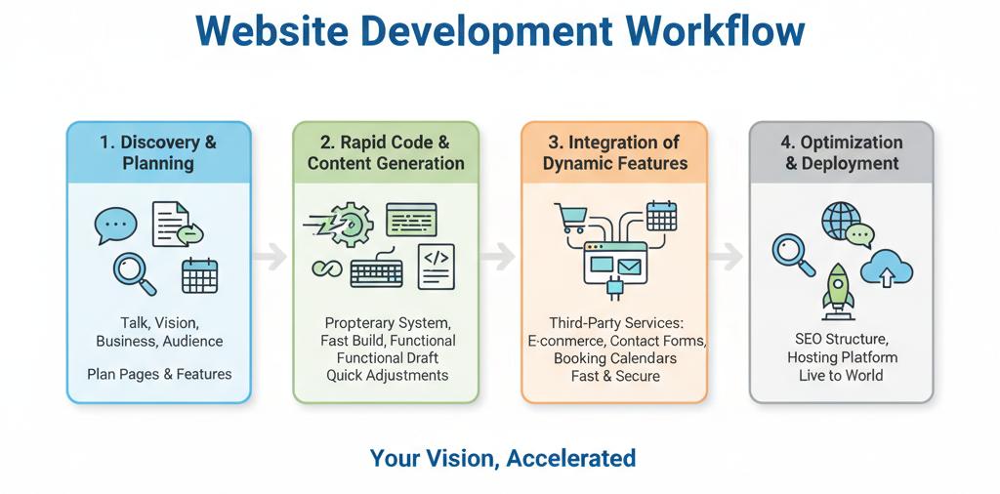

Are you a business owner looking for a new website? You’ve probably heard of terms like WordPress, Squarespace, or Shopify. And while those platforms have their uses, they often come with downsides—like slow load times, security vulnerabilities, and a long list of monthly fees.
My approach is different. Instead of templates and pre-made themes, I use a modern, collaborative process to build websites that are fast, secure, and uniquely yours.
Our Process: An Evolution of the Jamstack
Our work is inspired by the Jamstack architecture—a modern approach that stands for JavaScript, APIs, and Markup. In plain terms, this means we build fast, secure websites by decoupling the front-end (what your visitors see) from the back-end (the data and functions).
A Case Study: Turning a Filing Cabinet into a Recruitment Engine
Every professional needs a website that works as hard as they do. Recently, I had the opportunity to transform a university-hosted academic profile from a passive "digital filing cabinet" into an active tool for student recruitment.
Before
The original university profile was text-heavy and functioned like a digital filing cabinet.

After
The new site features a clean design, a professional headshot, and interactive elements.
Using our modern workflow, we created a new website that was more than just an aesthetic upgrade—it was a strategic overhaul. The new site loads instantly, looks professional, and now features the interactive tool you can try below.
Try the Student Research Idea Generator
This tool, embedded directly from its own separate web application, allows prospective students to engage directly with Dr. Kha's research areas. It moves them from passive viewers to active participants.
"The new website has significantly helped my confidence and professional online presence. The student research project idea generator has been an engaging tool for both my current and prospective students."